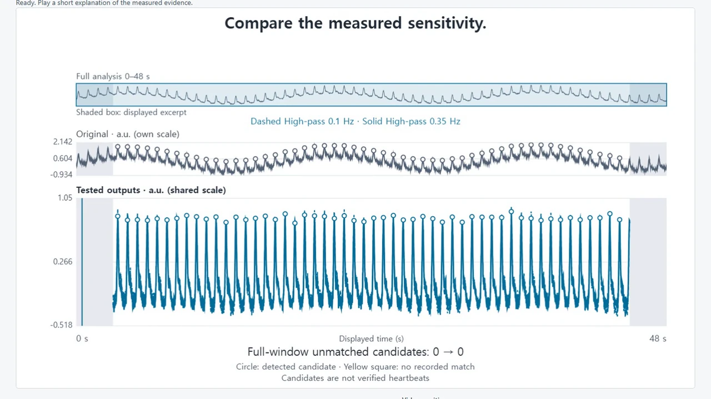

Meta Global AI Developer Hackathon — SignalTrace
For my solo entry, I built SignalTrace to compare two ways of filtering the same pulse recording. Its plots show which measurements change when I adjust the filter.

Official hackathon gallery